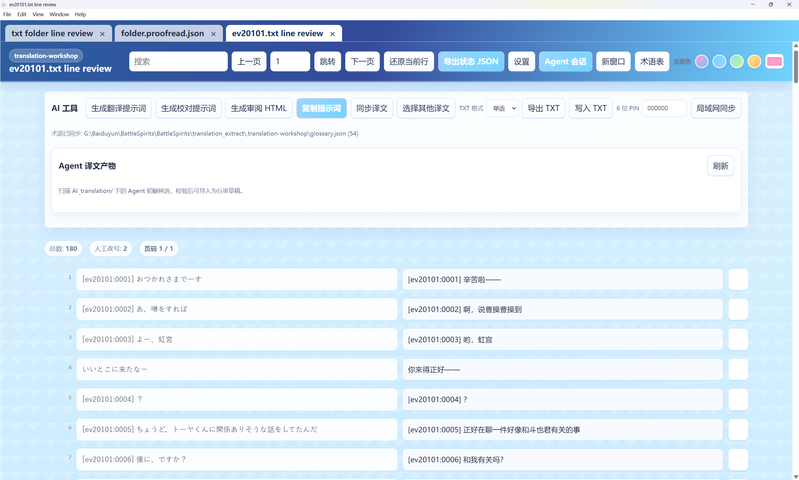

YN Translation Workshop

An open-source AI translation, proofreading and line-review workbench for long-form fiction and game localization.
YN turns TXT, EPUB and text-layer PDF into editable source/translation views. Glossaries, character references, structural preservation, chunked translation and proofreading belong to one project. Run AI across a whole project or ask about selected lines, then decide what to write to the final file.
中文 · Windows downloads · User guide · Project introduction (Chinese)
Use it for cross-chapter terminology, game control codes, manual line review and resumable long tasks. It is not a live screen translator. PDF support currently requires selectable text and does not include OCR. Cloud models receive the text needed for their assignments; translation quality still depends on the model, references and human review.
Requirements
- Current releases target Windows x64. Packaged desktop use does not require Node.js.
- AI features require a provider, model and authorization configured in YN. Manual editing remains available with the Agent off.
- Use TXT, EPUB or a text-layer PDF. Proofreading requires an existing translation aligned with the source.
Download and installation
Choose translation-workshop-Setup-2.2.0-x64.exe or translation-workshop-Portable-2.2.0-x64.exe from Releases. Public availability follows the published release; these docs describe 2.2.0.
Installers support in-app updates; portable builds are replaced using the release page. Releases include SHA256SUMS.txt.
Configuration
Configure your provider and model at the top of the start page, then select the source, project location, language direction and style. New tasks default to 500 lines per chunk and up to 3 child agents; explicit settings in existing projects are retained.
Use reference preparation before translation when you already have terminology, characters or project notes. For game text, inspect preservation-rule matches before starting so a regex does not lock translatable dialogue.
First translation
- Select the source and confirm the project location. Try a small sample first.
- Use the translation preparation shortcut and confirm its settings. YN checks the content, trials preservation rules, opens line-review HTML and starts the same translation workflow. Generate HTML first when you prefer more manual control.
- Refresh the candidate and edit or inspect the rows. Bind an existing translation before starting proofreading.
- Accept, reject or edit suggestions. Auto-apply changes HTML only; writing the final TXT is manual. EPUB/PDF use their export controls.

Complete tutorial · PDF guide · Background Agent API
What it helps with
| Need | YN behavior |
|---|---|
| Names and character references across chapters | Formal glossary, candidates, character records and direct reference matches; conflicts stay visible |
| Damaged game tags, variables or control codes | Preservation rules and mechanical checks, including proofreading suggestions |
| Human inspection of many rows | Source/target view, search, editing, candidate refresh and suggestion decisions |
| Continue an interrupted translation | Verify drafts and review evidence before resuming; stop blind retries of internal failures |
| PDFs containing code, formulas or figures | Extract prose and glyph/figure assets, reconstruct structured HTML, translate prose, then reflow into a new PDF |
| Run without opening the main window | External agents preview and confirm a plan through the official background API |
See the feature guide for settings, reuse, sampled proofreading, LAN access and artifact locations.
Projects translated with YN
- Japanese to Chinese: Megido72, a game translation project of about 10 million characters. The first-chapter description describes improved naming consistency and accuracy after retranslation with YN.
- Japanese to Chinese: game localization demonstrations by 美希命, including many localized games.
- Japanese to Chinese: the Steins;Gate “圆环” novel.
- Chinese to English: a Robotics;Notes novel translation.
See case notes for more projects.
Quality and reliability evidence
YN checks line alignment, placeholders, protected content, write scope and recovery proof in code before independent AI review. A model saying “done” does not replace artifact validation. These checks reveal structural and workflow failures; they do not prove every semantic choice is correct.
The quality and reliability report links public tests, reproduction commands, limits and failure handling. It does not claim measured semantic accuracy, a cross-tool ranking or universal cost savings.
2.2.0 highlights
- Text-layer PDFs must pass a complete mechanical draft, incremental native Pi structure edits, Host checks and an independent audit before HTML generation. Accepted logical units use code/math/reference protection and on-demand images; export reflows current HTML translations without original prose-box length limits. Academic identifier prescanning and parent-confirmed untranslated false positives remain available.
- Official background Agent API reusing project preparation, translation, proofreading and reference workflows.
- Improved large-session and candidate responsiveness, cancellation, recovery and character-name matching.
See the Changelog for full history.
Documentation and development
First run · Features · Workflows · Technical terms · Runtime map
Development requires Node.js >=22.19.0 and the existing npm lock:
npm ci
npm run dev
npm test
npm run build
See development and validation for desktop, LAN and release checks.
Privacy and license
Project state, assets, sessions and backups live in the project. Provider credentials live in Electron user data. When copying a project, also transfer and rebind external source/reference files. Anyone with the LAN PIN can operate the shared workbench; use trusted networks or controlled tunnels.
Thanks to OpenAI Codex and everyone who tested, translated and reported issues.